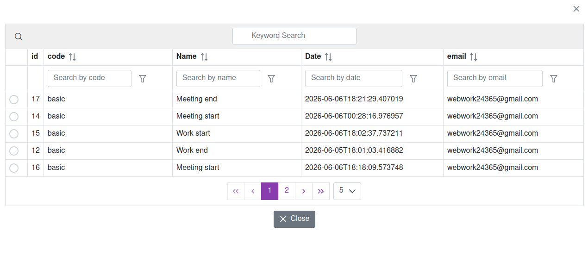
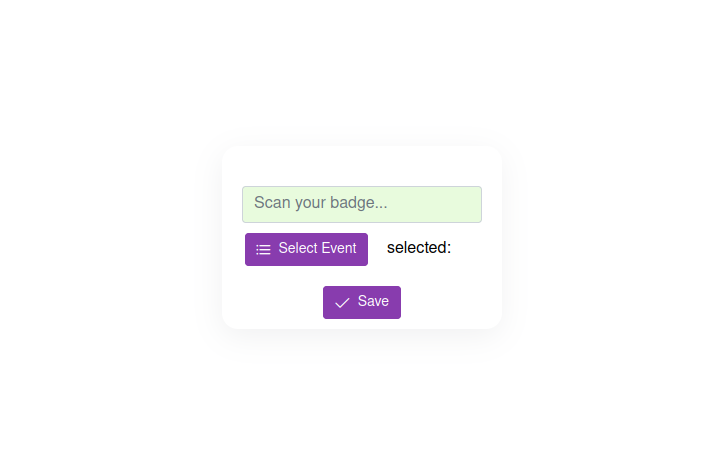

Track employee attendance, shifts, breaks, and working hours using QR-code badges.
Start Free 30-Day Trial30-Day Free Trial • QR Attendance • Workforce Analytics


Track employee working hours, attendance, and productivity in real time.
Generate and print employee badges with unique QR codes.
Employees scan their badge and instantly record attendance events.
Create custom events or use default options such as shift start, break start, and shift end.
View attendance statistics, worked hours, and employee performance reports.
Access attendance data from any device, anywhere.
Worker24 provides a simple and affordable employee time tracking system designed for businesses of all sizes.
Track attendance, monitor working hours, manage employee shifts, record break times, and generate workforce reports from a single dashboard.
Employees scan QR-code badges and select attendance events from a customizable list. Team managers can monitor attendance activity in real time.
All features are available free of charge for the first 30 days.
After the trial period, team owners pay only $0.10 per day.
Employees can use the attendance system completely free of charge.
Create your team, print employee badges, track attendance, and access workforce analytics in minutes.
Open Time Tracking System